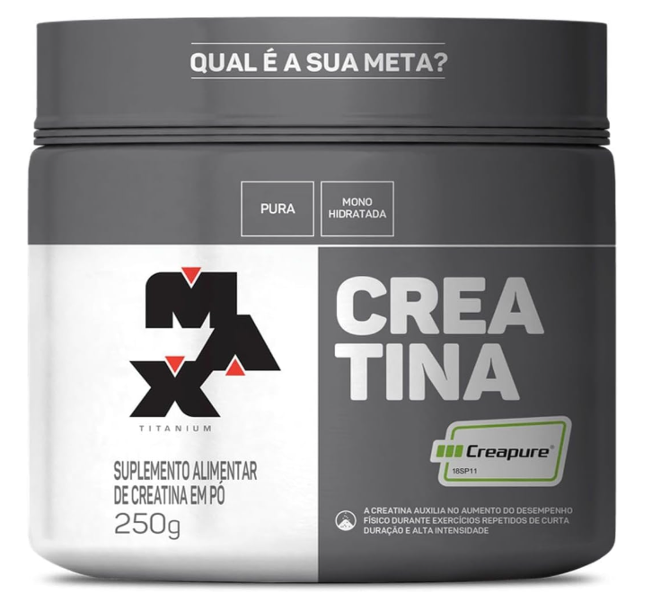
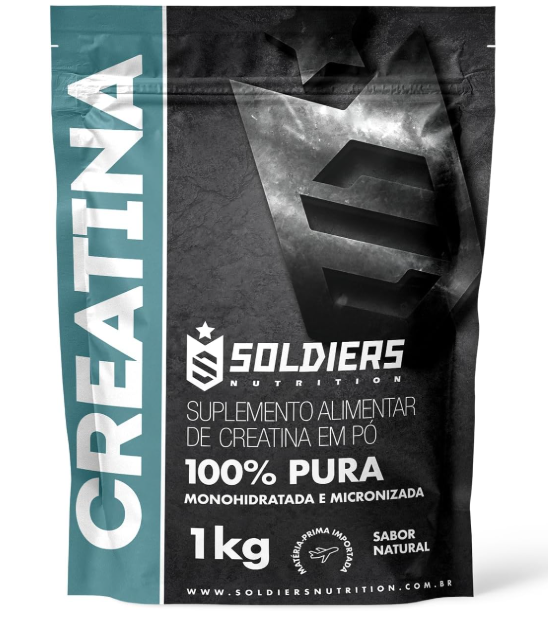
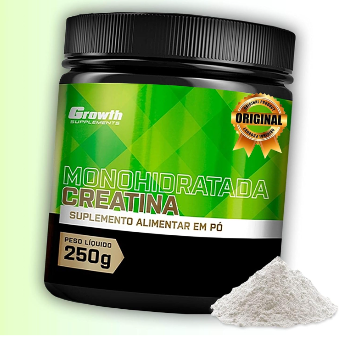
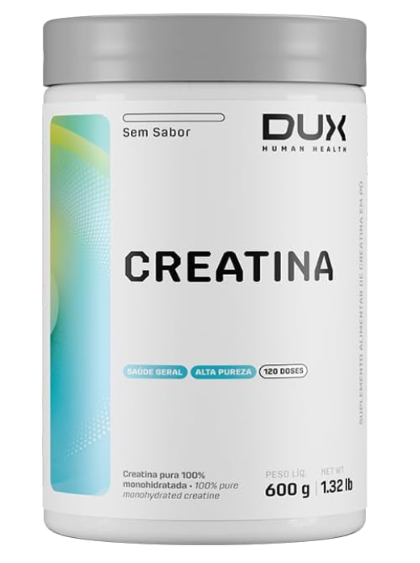

Let’s Gym Talk
Academia, ciência e motivação
Academia, ciência e motivação
A creatina monohidratada é considerada um dos suplementos mais eficazes e mais estudados do mundo, com evidência científica forte para aumento de força, potência e desempenho em exercícios de alta intensidade.
Além do uso esportivo, pesquisas também investigam a creatina em áreas como saúde muscular, envelhecimento, fadiga e até função cognitiva.
Porém, para obter resultados reais, você precisa de duas coisas: uma creatina pura e confiável + uso diário consistente.
A creatina funciona aumentando os estoques de fosfocreatina dentro do músculo. Isso ajuda a regenerar ATP (energia rápida), o que melhora desempenho em exercícios curtos e intensos, como musculação, sprint e HIIT.
Por isso, a creatina é especialmente eficiente para quem quer:
Sim. A creatina tem respaldo científico robusto e é citada em revisões sistemáticas e diretrizes oficiais como uma das melhores suplementações para desempenho e hipertrofia.
Segundo a International Society of Sports Nutrition (ISSN), a creatina é segura e eficaz quando utilizada corretamente.
Para pessoas saudáveis, a creatina é considerada segura mesmo em uso prolongado. Os estudos mostram que ela não prejudica fígado e rins em indivíduos sem doença renal.
⚠️ Se você tem doença renal, hipertensão não controlada ou faz uso de medicamentos específicos, consulte um médico ou nutricionista antes.
A melhor creatina, de acordo com a ciência, é a Creatina Monohidratada. Ela é a forma mais estudada, mais eficiente e com melhor custo-benefício.
Existem versões com marketing forte (Creatina HCL, Kre-Alkalyn, etc.), mas a literatura científica mostra que a monohidratada continua sendo a melhor escolha em custo-benefício e evidência.
Creatina micronizada geralmente tem partículas menores e pode dissolver melhor. Porém, os resultados no corpo são praticamente os mesmos. A vantagem real é a facilidade de consumo.
A dose mais usada em estudos é 3g a 5g por dia. O principal fator é a consistência diária.
Não é obrigatório. Existe a estratégia de saturação (ex: 20g por dia por 5 a 7 dias), mas a maioria das pessoas pode simplesmente tomar 3g a 5g por dia.
A saturação acelera os resultados iniciais, mas não muda o resultado final depois de algumas semanas.
O melhor horário é aquele que você consegue manter todos os dias. Estudos sugerem que tomar junto de carboidratos/proteína pode ajudar levemente na absorção, mas o mais importante é o uso diário.
💡 Dica prática: tome junto do almoço ou do pós-treino para não esquecer.
Essas opções são boas para quem quer performance, pureza e segurança. Sempre confira embalagem e avaliações antes de comprar.

Excelente opção para quem busca alta pureza, boa reputação e consistência de qualidade.
Qualidade: ⭐⭐⭐⭐⭐
Uso: 3g a 5g por dia.
Ver na Amazon
Ideal para quem quer bons resultados sem gastar muito, mantendo qualidade confiável.
Qualidade: ⭐⭐⭐⭐☆
Uso: 3g a 5g por dia.
Ver na Amazon
Uma das mais compradas e avaliadas. Boa opção para quem quer segurança e reputação.
Qualidade: ⭐⭐⭐⭐☆
Uso: 3g a 5g por dia.
Ver na AmazonBoa escolha para começar sem complicação: creatina simples, pura e fácil de usar.
Qualidade: ⭐⭐⭐⭐☆
Uso: 3g por dia.
Ver na Amazon
Opção com boa solubilidade para quem não gosta da textura mais arenosa de algumas creatinas.
Qualidade: ⭐⭐⭐⭐☆
Uso: Misture em água, suco ou shake.
Ver na Amazon⚠️ Observação: o ranking é baseado em reputação geral, avaliações, confiabilidade e critérios de pureza. O melhor produto pode variar dependendo do preço do dia e disponibilidade.
Sim, mas a retenção ocorre dentro do músculo (intracelular). Isso pode ser positivo para performance e hipertrofia.
Creatina não engorda em gordura. Ela pode aumentar o peso corporal por retenção intramuscular e ganho de massa magra ao longo do tempo.
Não existe evidência científica forte provando que creatina causa queda de cabelo. O mito surgiu de um estudo pequeno relacionado ao DHT, mas não foi confirmado em pesquisas maiores.
Em pessoas saudáveis, estudos não mostram aumento de risco de danos renais. Porém, quem já tem doença renal deve consultar médico antes.
Sim. A creatina funciona por saturação muscular. Se você toma só no dia do treino, o efeito será muito menor.
A creatina é um dos melhores suplementos para quem quer ganhar força, melhorar desempenho e potencializar hipertrofia. A melhor creatina é aquela que é monohidratada, pura e confiável.
Se você treina sério, a creatina é um dos poucos suplementos que realmente fazem diferença.
⚠️ Este artigo é educativo e não substitui orientação médica ou nutricional.